Community brushes
Brushes made by artists, free for everyone.
Sculpting brushes for SculptForge, shared by the people who made them and dedicated to the public domain (CC0): use them in personal and commercial work. A brush is a small data file, never code, so installing one is as safe as opening a text file.
Install a brush
From the app
In SculptForge open View > Community brushes, search or pick a tag, and click Install. The brush is checked against the gallery's checksum, added to your library and ready to sculpt with.
Drag the file
Download any .sfbrush below and drag it onto the SculptForge window (or use Brush Lab's
Load .sfbrush). Studios can share a whole folder of brushes with
SCULPTFORGE_BRUSH_PATH.
Make your own
Describe a brush to the AI brush creator in Brush Lab ("dry cracked mud", "a palette knife that drags clay"), tune the recipe, then share it so everyone can use it.
The gallery
21 brushes
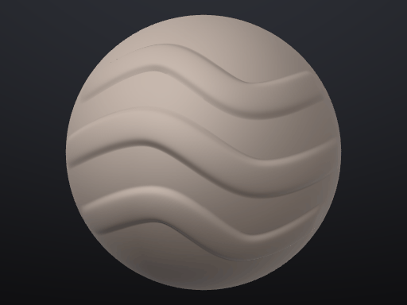


Edge Wear
by SculptForge
Chips and softens only the sharp edges and ridges, for weathered props.
Download

Hammered Metal
by SculptForge
Soft overlapping hammer dimples for beaten copper, armour and cookware.
Download


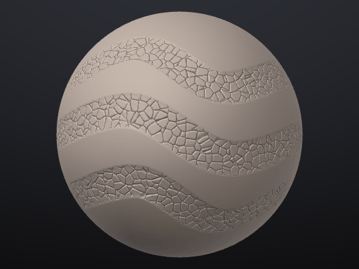
Stone Carve
by SculptForge
Scrapes hard planes and breaks them up with cracks for rocks and ruins.
Download


No brushes match your search.
Built-in brush packs
70 brushes in 7 packs
These ship with SculptForge, nothing to install. Open Sculpt > Brush and pick one, or choose Sort: Pack to see them grouped like this. A pack brush brings its own alpha the first time you use it. More in the guide: Brush packs.
Clay & Form
Block in, build up and refine big forms: clay strokes, planes, and smooth blends. In the guide
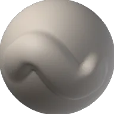
Block Former
Big, flat-topped clay strokes that stack fast, for blocking in primary forms.
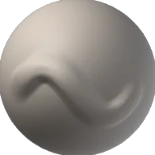
Clay Drag
Smears soft clay along the stroke like a thumb pushing it, for blending transitions.
Clay Strip
Narrow, crisp strips of clay with a hard edge, for muscle fibres and planes.
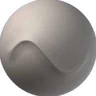
Edge Definer
Pinches a crisp edge into the surface where two planes meet.
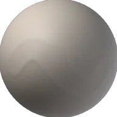
Form Smoother
Relaxes lumps while keeping the big shape, for a clean pass after blocking.
Level Out
Presses hills and valleys onto one plane and softens the result, to calm busy areas.
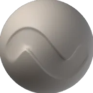
Plane Cutter
Shaves the surface down to flat planes, for stylised forms and stone.
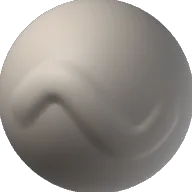
Soft Clay
Gentle round clay that builds in thin layers and blends into the surface.
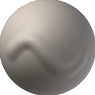
Swell
Puffs the surface out along its own normals, for cheeks, bellies and soft volumes.
Volume Fill
Fills low areas up to the stroke's plane and leaves the high points alone.
Hard Surface
Crisp planes, panel lines, bevels, rivets and bolts for props, armour and machines. In the guide
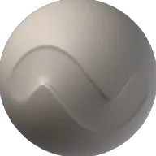
Bevel Scrape
Scrapes high points into a bevel along an edge, for chamfers.
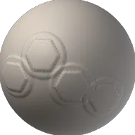
Bolt Head
Stamps a hexagonal bolt on a washer; space the dabs out or click once.
Flat Plane
Presses a perfectly flat face with a hard edge, for machined surfaces.
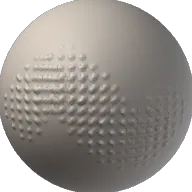
Grid Studs
An even grid of small studs, for grip textures and tread plates.
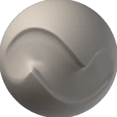
Hard Cut
Cuts the surface flat below the stroke, for sharp silhouettes and clean cuts.
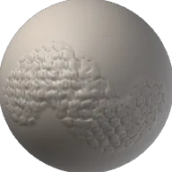
Hex Armour
Raises a honeycomb of hexagonal plates, for sci-fi armour and shells.
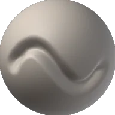
Panel Groove
Cuts a clean, narrow groove for panel gaps and seams.
Raised Plate
Builds a flat, square-edged plate on the surface, for armour and hull panels.
Rivet Row
Stamps rows of round rivet heads along the stroke.
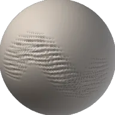
Vent Slots
Cuts parallel slots like a vent grille; drag across the slots.
Organic & Skin
Pores, wrinkles, folds, veins and scales for creatures and portraits. In the guide
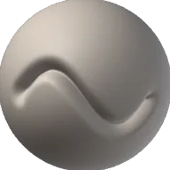
Crease Line
A sharp, deep crease with pinched sides, for eyelids, lips and nasal folds.
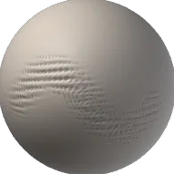
Crow's Feet
Fine fanned wrinkle lines, for eye corners and knuckles.
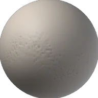
Deep Pores
Bigger, deeper pores for noses, cheeks and rough skin.
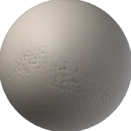
Fine Pores
Small, evenly scattered pores for faces and close-ups.
Flesh Pinch
Pulls soft flesh together into a ridge, for lips, knuckles and wrinkles that bunch.
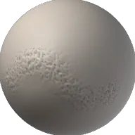
Leather Hide
Pebbled grain with fine creases, for leather, elephant and rhino skin.
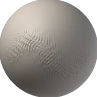
Muscle Fibre
Long soft ridges along the stroke, for muscle striation and sinew.
Reptile Scales
Overlapping rows of rounded scales, for lizards, dragons and fish.
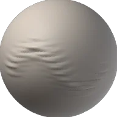
Skin Fold
Soft rolls of heavy skin, for necks, bellies and brows.
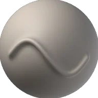
Vein
Raises thin, soft-edged veins along the stroke.
Cloth & Folds
Folds, seams, stitches, weave and knit for clothing and soft goods. In the guide
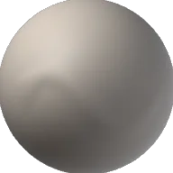
Cloth Drape
Drags the surface along the stroke so folds flow and hang, for drapery.
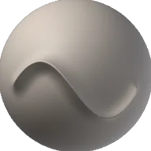
Fold Ridge
Raises a rounded fold of cloth with soft sides.
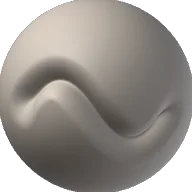
Fold Valley
Carves the soft valley between two folds.
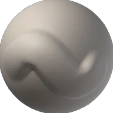
Hem Edge
A flat, square-edged band along the stroke, for hems, cuffs and straps.
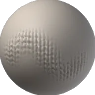
Knitted Wool
Rows of V-shaped loops, for jumpers, scarves and chunky knits.
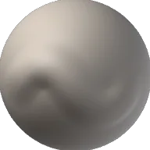
Padded Quilt
Puffs soft panels up between the stroke's edges, for quilting and padding.
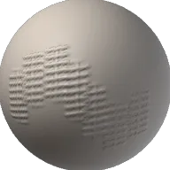
Seam Stitch
A sewn seam with cross stitches; drag along the seam.
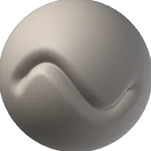
Tension Crease
A sharp crease where cloth pulls tight, for armpits, elbows and seams under strain.
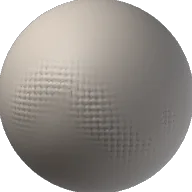
Woven Cloth
Threads woven over and under, for canvas, denim and sacking.
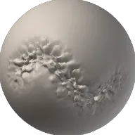
Wrinkle Bunch
Small compressed wrinkles where cloth gathers, at waists and wrists.
Damage & Wear
Cracks, chips, dents, scratches and erosion for weathered stone, wood and metal. In the guide
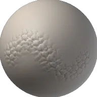
Cobbles
Packed rounded stones with grooves between, for paths and old walls.
Deep Fissure
One deep, jagged split, for broken rock and ice.
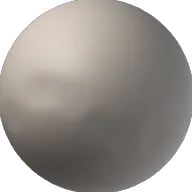
Dents
Soft, scattered dents, for beaten metal and hammered surfaces.
Dry Cracks
A web of thin cracks, for dry earth, old paint and stone.
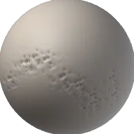
Edge Chips
Knocks angular chips out of edges only; flat areas stay whole.
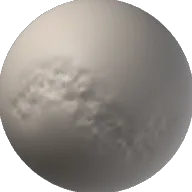
Eroded Stone
Breaks the surface up with noise, for weathered rock and sandstone.
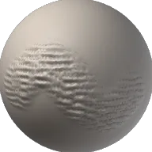
Rock Layers
Stepped, broken strata, for cliffs and layered stone.
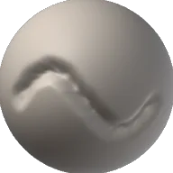
Scratches
Thin, sharp scratches along the stroke, for scuffed metal and wood.
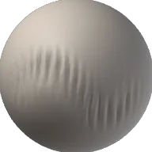
Wood Grain
Rough furrows and ridges, for bark and weathered planks; drag along the grain.
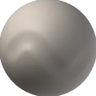
Worn Edges
Softens and rounds only the sharp ridges, as years of handling do.
Ornament
Beads, ropes, filigree, studs and carved patterns for jewellery, trims and decoration. In the guide
Bead Chain
A row of round beads along the stroke, for jewellery and trims.
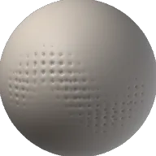
Dot Texture
Fine even dots, for stippling, punched leather and decorative fields.
Engrave
Cuts a fine, crisp line, for engraving, runes and lettering.
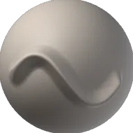
Filigree Line
A thin, raised wire line, for filigree and engraved borders.
Gem Setting
A raised round setting with a crisp rim, for cabochons and gem seats.
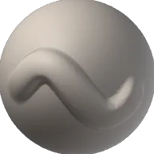
Raised Band
A flat, raised band with clean edges, for bezels, rims and mouldings.
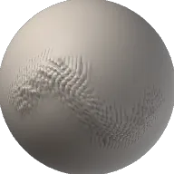
Rope Twist
A twisted rope or cord, for borders and rigging.
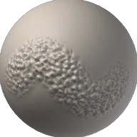
Scale Mail
Rows of small scales, for armour, roof tiles and feathers.
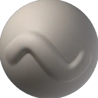
Scroll Relief
Soft, rounded relief that builds up slowly, for carved scrolls and leaves.
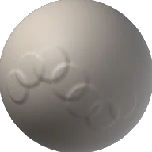
Stud Row
Rounded studs spaced along the stroke, for belts, doors and armour trims.
Wood
Weathered grain, splinters, cracks, knots, end-grain rings and plank seams for old timber. In the guide
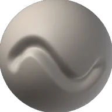
Board Gap
A clean, narrow gap between two boards with softened edges.
Check Split
One deep, pinched split along the stroke, for dried beams.
End Rings
Stamps the rings and radial checks of a sawn log end; click once.
Grain Cracks
Narrow forked splits that run along the grain, for dried and checked timber.
Knot
Stamps a round knot with the grain bending around it; click once.
Plank Seams
Two boards meeting at a seam with grain and nail dimples, for floors and doors; drag along the seam.
Raised Grain
Hard late-wood lines standing proud of the surface, as on sandblasted or driftwood boards.
Splinters
A fan of sharp, torn splinters standing up from the surface, for broken planks.
Weathered Planks
Long worn grain lines with the soft wood eaten away between, for old boards; drag along the grain.
Wood Chaff
Scattered shavings and chips of torn fibre, for splintered ends and chopped wood.
Most-wanted brushes
Ranked by 👍 votes on our Discord
Want a brush that isn't here yet? Start a post in #ideas on our Discord with the Brushes tag, one brush per post, and vote with 👍 on the ones you want. The list updates every 30 minutes.